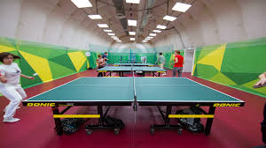

<!--
  Generated template for the HomePage page.

  See http://ionicframework.com/docs/components/#navigation for more info on
  Ionic pages and navigation.
-->
<ion-header>

  <ion-navbar>
      <button ion-button menuToggle>
          <ion-icon name="menu"></ion-icon>
      </button>
    <ion-title>Home</ion-title>
  </ion-navbar>

</ion-header>


<ion-content>
<ion-grid style="padding: 0">
  <ion-row class="sliders">
    <ion-col col-12 style="padding:0">
        <ion-slides autoplay="2000" loop="true">
            <ion-slide class="slide">
              <h1>Slide 1</h1>
            </ion-slide>
            <ion-slide class="slide">
              <h1>Slide 2</h1>
            </ion-slide>
            <ion-slide class="slide">
              <h1>Slide 3</h1>
            </ion-slide>
          </ion-slides>
    </ion-col>
  </ion-row>
  <ion-row class="societyProvisions">
    <ion-col class="card-background-page">
        <ion-card>
            
            <div class="card-title">Facilities</div>
          </ion-card>
    </ion-col>
  </ion-row>
</ion-grid>
</ion-content>
